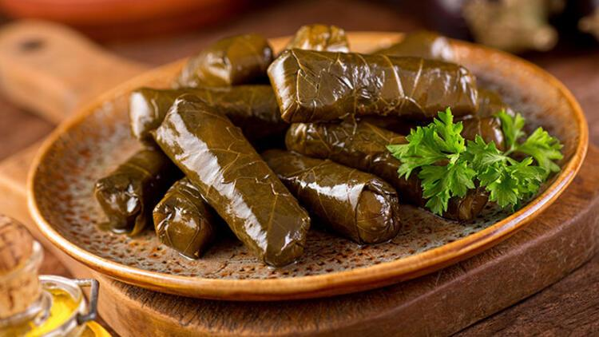

SARMA
Yaprak sarma is a traditional dish in Turkey that is typically
grape vine leaves rolled and filled with minced meat. This
vegan version has a rice filling that is seasoned well with
lemon, fresh parsley, paprika, mint, and pepper paste. Filling
and rolling the vine leaves is a bit time-consuming, but you
will end up with an enormous amount of yaprak sarma that you
can eat from for days.
Ingredients
- 1 package of vine leaves
- 2 3/4 cups white rice
- 2 tablespoons tomato paste, divided
- 1 tablespoon pepper paste or additional tablespoon of tomato paste
- 1 lemon, sliced
- Fresh parsley
- Paprika powder
- Dried mint
- Pepper and salt
- 1 vegetable stock cube
Preparation
- Rinse the rice well.
- Heat some olive oil in a pan. Add the rice and fry shortly.
Add the tomato and pepper paste and stir everything together well.
Fry for about a minute.
- Add parsley, paprika powder, mint, pepper, and salt. Use a bit more than you
would usually do because in the boiling process, part of the flavor will
evaporate. Stir well and take the pan off the heat. You are going to fill the
vine leaves with uncooked rice. The rice will be cooked later with the vine
leaves. Leave the mixture to cool down.
- In the meantime, take the vine leaves from the package and carefully take them
apart. Rinse them one by one.
- Put all the leaves in a pan with boiled water (not on the stove) and leave them
for five minutes. Drain.
- Take a large pan and put some olive oil on the bottom. Put a few broken vine
leaves on the bottom of the pan. This will stop the yaprak sarma from sticking
to the pan.
- Take a large pan and put some olive oil on the bottom. Put a few broken vine
leaves on the bottom of the pan. This will stop the yaprak sarma from sticking
to the pan.
- Now you can start rolling the vine leaves. Use a cutting board to put the vine
leaves on. On one side of the board, put the pan with the rice mixture and put
a plate with vine leaves and on the other side to put the yaprak sarma in.
- Take a vine leave and put it on the cutting board with the veins up. Cut or
break the stem off carefully. Put a little bit of the rice mixture onto the
bottom of the leaf. Make sure you leave some space between the rice and the
end of the leaf. Take the two lowest ends of the leaf and fold them over the
rice. Do the same for the left and the right end of the leaf. Then roll up the
leaf tightly from the bottom to the top. The first ones will be a bit difficult,
but after a few you will know how to do it.
- Put the sarma into the pan and repeat the same steps for the other vine leaves.
Make sure that you put the yaprak sarma close to each other in the pan. If they
are too loose, the rolls can open while cooking. If the bottom of the pan has
been filled, you can put the next sarma on top of the others.
- When you have finished all the sarmas, cut a lemon into slices. Put the
slices on top of the sarmas and put a plate, turned upside-down on top of that.
This will prevent the sarmas from opening while boiling.
- Mix boiling water with a tablespoon of tomato paste and a stock cube. Pour
the water into the pan until the plate is just under water. Put the pan on
the stove and bring to boil.
- Leave the sarmas to simmer for 45 minutes on low heat. It is important that
you use a pan that is big enough because the sarmas will get bigger while
boiling. The rice increases in volume when it is cooked.
- Turn off the heat after 45 minutes and leave the sarmas in the pan with a lid
on (without draining the water) for at least 30 more minutes.